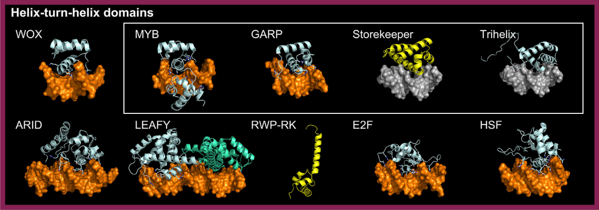

Superclass: Helix-turn-helix domains
Class: Tryptophan cluster factors
The Tryptophan Cluster Factors class includes MYB and MYB-related TF families, which are greatly expanded in land plants (e.g., R2R3-MYB).
These factors contain a HTH domain with conserved tryptophan residues. The crystal structure of the R2R3-MYB WEREWOLF (PDB: 6KKS)
in complex with DNA reveals a fold similar to other eukaryotic MYBs
[src]
[src].
This class also includes three plant-specific families absent in mammals:
-
GARP: Divided into G2-like and ARR-B subfamilies. Structures are available for PHR1 (PDB: 6J4R) and LUX (PDB: 5LXU)
in complex with DNA, and for ARR10 (PDB: 1IRZ) without DNA
[src]
[src]
[src].
-
Trihelix: Initially proposed to be related to C-MYB DBD based on weak sequence similarity, confirmed by the solution structure of
Arabidopsis GT-1 DBD (PDB: 2JMW)
[src]
[src].
-
Storekeeper (STK): Included based on AlphaFold2 models showing structural similarity to HTH domains, with good alignments to Trihelix,
MYB, and GARP families
[src].
